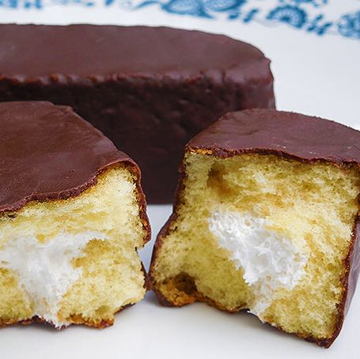
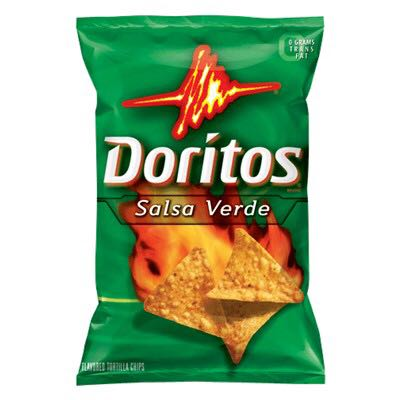
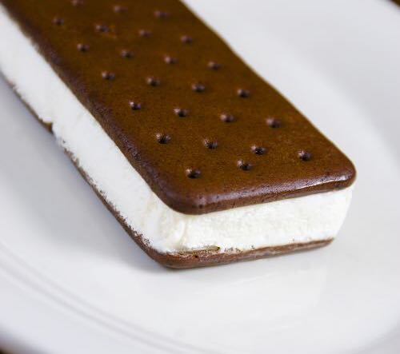
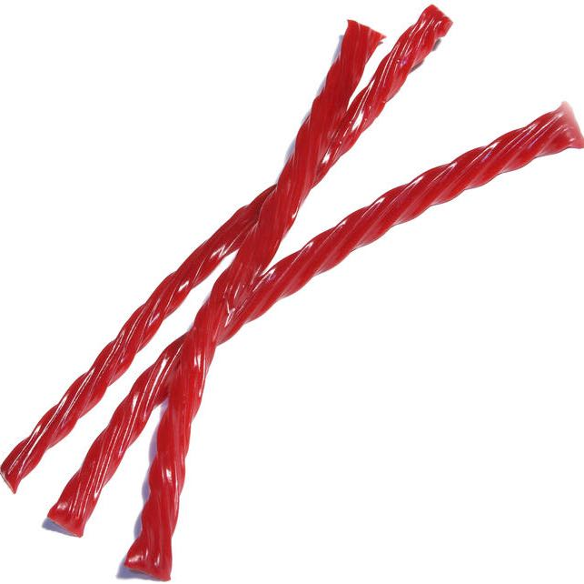
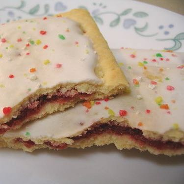
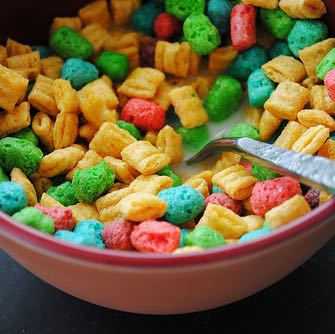

GROSS THINGS I KIND OF LIKE
-

Chocodiles
I hate twinkles but Chocodiles are kind of yummy.
-

Salsa Verde Doritos
The first one tastes so gross. The second one is like eh, not so bad. And then they become delicious. This effect lasts for about an hour.
-

Those rectangular ice cream sandwiches
If I think hard about them while eating they taste like plastic and butane. But if I distract myself they taste like heaven.
-

Twizzlers
Man they're so nasty. Maybe if I eat three at a time I'll get through the package faster. (Side note: red vines are straight up gross and if you eat them and are anyone other than my poor confused wife or daughter, I don't like you.)
-

Strawberry Poptarts
Gah. So pasty and gross. I never ever buy a whole box. I don't want to know that much about myself.
-

Captain Crunch with Crunch Berries
Who am I kidding. There's nothing gross at all about this one true wonder of the breakfast cereal aisle.